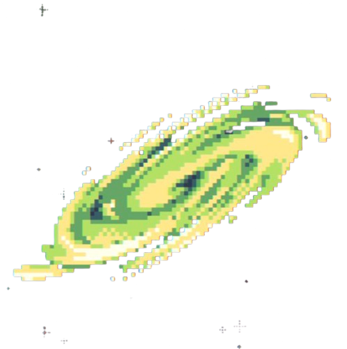

___ ___ ___ ___
/\__\ _____ /\ \ /\__\ /| |
/:/ _/_ /::\ \ /::\ \ /:/ / |:| |
/:/ /\__\ /:/\:\ \ /:/\:\ \ /:/ / |:| |
/:/ /:/ / /:/ \:\__\ /:/ \:\ \ /:/ / ___ __|:| |
/:/_/:/ / /:/__/ \:|__| /:/__/ \:\__\ /:/__/ /\__\ /\ |:|__|____
\:\/:/ / \:\ \ /:/ / \:\ \ /:/ / \:\ \ /:/ / \:\/:::::/__/
\::/__/ \:\ /:/ / \:\ /:/ / \:\ /:/ / \::/~~/~
\:\ \ \:\/:/ / \:\/:/ / \:\/:/ / \:\~~\
\:\__\ \::/ / \::/ / \::/ / \:\__\
\/__/ \/__/ \/__/ \/__/ \/__/
>_ Barshan Ray
PhD Student in Astrophysics | Pixel-Powered Science
▚ About Me
A BS/MS graduate from IISER Kolkata and a PhD student at the Argelander-Institut für Astronomie, I aspire to pursue a career in physical sciences.
My work lies broadly in the realm of astrophysics, with an emphasis on astrophysical plasmas and magnetic fields.
I am an IMPRS Doctoral Student with a guest contract at the Max-Planck-Institut für Radioastronomie. My PhD project involves study of the properties and signatures of the turbulent hydromagnetic dynamo, via Pencil Code simulations and theoretical modelling.
Work during my master’s degree has focused on the protoplanetary disk, and how magnetic fields affect its formation and evolution via non-ideal magnetohydrodynamics.
Besides astrophysics, I am frequently found obsessing over some beautiful computational solution or the other.
▚ Research
- 🌌 Magnetohydrodynamic Simulations
- 🔋 Study of the hydrodynamic dynamo
- 👾 Hopefully will add more soon as I settle in!
▚ Publications
▚ Employment
- September 2025-Current
Argelander-Institut für Astronomie, Germany
Doctoral Student under Dr. Jennifer Schober - August 2025-Current
Max-Planck-Institut für Radioastronomie, Germany
Guest Scientist
▚ Education
- 2020-2025
BS-MS Dual Degree
Indian Institute of Science Education and Research Kolkata
▚ Experience
- August 2024-May 2025
Indian Institute of Science Education and Research (IISER) Kolkata
Master’s thesis on “Time Evolution of Protoplanetary Disk Size under Non-ideal Magnetohydrodynamics,” under the supervision of Dr. Yueh-Ning Lee. - June 2023-August 2023
National Taiwan Normal University (NTNU), Taiwan
Worked on “Establishing Stable Protoplanetary Disc Radii Threaded by horizontal magnetic fields,” as a summer intern under Dr. Yueh-Ning Lee. - June 2022-June 2023
Center of Excellence in Space Sciences, India (CESSI)
Helped maintain the CESSI space weather website. Tinkered around with neural networks, training them on solar light curves.
▚ Conferences and Science Camps
- October 2025
Pencil Code School and User Meeting 2025
- Organised at CERN.
- Participant at this conference for Pencil Code, which is extensively used as a part of my PhD project for turbulent MHD simulations.
- February 2024
Speaker at a talk organised by Singularity, The Astronomy Club of IISER-K. Presented to an audience of primarily early undergrads. - June 2023-August 2023
NCTS Theoretical and Computational Astrophysics Summer Student Program
- Organised by and at the National Center for Theoretical Sciences (NCTS), Taiwan.
- Interacted with eminent researchers active in the field of astrophysics in the Asian region.
- June 2022-July 2022
SPARC Workshop on Machine Learning in Solar Physics and Space Weather
- Organised by and held in CESSI.
- Attended a week-long workshop detailing machine learning and neural network techniques employed in the solar physics domain.
- Interacted with eminent researchers working in solar physics and space weather, from India and Sweden.
- February 2022
SOKENDAI Asian Winter School on astronomy and astrophysics (Online)
Attended a week-long workshop on ongoing research in the astrophysical domain. - December 2019
Vijyoshi National Science Camp
Organised by KVPY in IISER Kolkata. - June 2019
JBNSTS Summer Science Workshop Program
Organised by JBNSTS in 2019, in IISER Kolkata.
▚ Contact
- Email: barshan@mpifr-bonn.mpg.de
- GitHub: github.com/FugitiveDock282
- LinkedIn: LinkedIn/barshan-ray